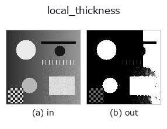

morphology op• Data kinds: image → image
• Call: fullseye.apply(img, "local_thickness", a=0.5, b=0.5) (2-D model = एक image + दो scalar knobs a,b∈[0,1])

*Figure synthetic 128×128 input पर सच में चलाकर मिला output है। बाईं ओर input, दाईं ओर output। Point clouds ऊपर से देखे गए scatter के रूप में (brightness = z), 1-D series line के रूप में, volumes z दिशा में maximum-intensity projection के रूप में, videos बीच के frame के रूप में, complex images amplitude के रूप में, और जो return values चित्र नहीं बन सकते वे स्वयं values के रूप में दिखाए जाते हैं।*
Knob a को बदलकर (0.1 / 0.5 / 0.9, दूसरा knob default पर):
▸ local_thickness: knob a को बदलने का figure (docs site)
Knob b को बदलकर (0.1 / 0.5 / 0.9, दूसरा knob default पर):
▸ local_thickness: knob b को बदलने का figure (docs site)
दूसरी images पर भी (synthetic scene / photo / coins। ऊपर की row में inputs, नीचे की row में उनके outputs। Knobs default पर):
▸ local_thickness: दूसरी images पर output (docs site)
*चौथा column colour (H,W,3) input है। यह op channels को पार किए बिना colour संभालता है (colour channel को तीसरे spatial axis की तरह convolve नहीं करता)।*
हर foreground pixel में "उसे ढक सकने वाले सबसे बड़े वृत्त का व्यास" भरकर लौटाता है (local thickness)।
b वह threshold है जिसके ऊपर चमकीला पक्ष foreground माना जाता है (0.1–0.9)। a मापी जाने वाली radius की ऊपरी सीमा है (1–12 pixels), और आउटपुट को उस सीमा से भाग देकर [0,1] में लाया जाता है —— जब absolute मान चाहिए, तो a से सीमा वापस निकालें और फिर से गुणा करें।
एक classic मात्रा जो कण का आकार, pore का आकार और दीवार की मोटाई "1 ही map" के रूप में देती है; यह morphological granulometry के समान है: अगर किसी pixel का मान r है, तो वह pixel radius r की disc वाली opening में बचा रहता है। Implementation सीधा है: distance transform अंतर्वृत्त (inscribed circle) की radius देता है, और radius के घटते क्रम में हर वृत्त को उस क्षेत्र में लिखा जाता है जिसे वह ढकता है।
उपयोग का दायरा: (1) Foreground 1 ही threshold से तय होता है, इसलिए असमान रोशनी में मोटाई स्थान के अनुसार पक्षपाती हो जाती है —— पहले local_threshold या इसी तरह के op से समतल करें। (2) सीमा a से मोटी संरचनाएँ सीमा पर जाकर रुक जाती हैं (saturate हुआ या नहीं, यह आउटपुट के अधिकतम के 1.0 पर अटकने से दिखता है)।
(3) यह pixel-इकाई की मात्रा है, इसलिए व्यास 3 pixels से नीचे जाते ही quantization step 30% से ज़्यादा हो जाता है।
उपयोग: casting के खोखलों और foams में pore-size वितरण, पाउडर कणों का आकार, पतली दीवार वाले हिस्सों की पहचान, fibre की मोटाई। 3-D संस्करण ops3d में vol_wall_thickness है। HALCON में इसका कोई एकल समकक्ष op नहीं है।
• gallery2d_morphology family guide
• Sample data catalog (DL URL / license) — 2-D के लिए skimage.data (BSD/public) + synthetic, 3-D के लिए real data sources (Stanford/PDS आदि) के DL URL।
• Operators का स्रोत और संदर्भ — इस op family के मूल research/methods के स्रोत।
• Algorithm का मानक स्रोत (लेखक, वर्ष) और उपयोग ऊपर की family usage guide में दिए गए हैं।
नीचे का program सच में चलता है, यह जाँचा गया है (figure वाला ही input)। Studio की help में यह block buttons बन जाता है, जिनसे इसे वहीं load करके चलाया जा सकता है।
local_thickness 0.35 0.50
▸ यह pipeline load करें · Load करके चलाएँ
• gallery2d_morphology — py -3.11 examples/gallery2d_morphology.py
• poc_bone_trabecular_thickness — py -3.11 examples/poc_bone_trabecular_thickness.py
image को input के रूप में लेते हैं)identity · gaussian · mean_box · bilateral · unsharp · median · min_filter · max_filter
morphology)gerode · gdilate · gopen · gclose · runlength_smear · tophat · bothat · morph_grad
*Provenance: ops.py — 2D operator registry. यह per-op note tools/opdocs.py md से अपने-आप generate होता है (हाथ से edit न करें)।*
© 2026 Kazufumi Furuse — Fullseye operator documentation. Licensed under Apache-2.0.